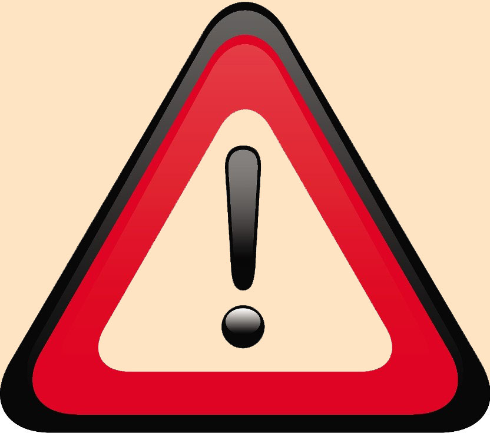

Front end
Html hujjatlari va dasturlari matnli fayllarda yoziladi.
Matnli fayllar faqat belgilarni o'z ichiga oladi: harflar,
raqamlar, belgilar va boshqalar.
Matn muharriri
Atom bu "Git Hub"dagi mutaxasisslar tomonidan yaratilgan mashhur muharrir.
U Windows, Mac, Linux va boshqa tizimlar uchun mavjud.
Vs code bu "Microsoft" tomonidan yaratilgan yana bir mashhur muharrir.
U Windows, Mac va Linux tizimlari uchun mavjud.
 Diqqat kodingizni
matn protsessoriga yozishga urinmang (masalan, Microsoft word, Pages,
Google docs, yoki Text editga). Ushbu dasturlar matnga qo'shimcha
yashirin formatlash ma'lumotlarini qo'shishi mumkin.
Izohlar
- Server bu shaxsiy kompyuteringizdan farqli maxsus kompyuter.
- Veb-sahida ko'riladigan narsalarning hammasi bir xil server saqlanishi
kerak (turli xil serverlarda veb-sahifaning turli qismlariga ega bo'lolmaysiz).
- Veb-sahifaga kirganingizda, brauzeringiz serverga so'rov yuboradi.
- Veb-sahifada bir nechta veb-serverlarning manbalari (masalan, video yoki rasmlar kabi) bo'lishi mumkin.
- HTTP–Hyper Text Transfer Protocol ya'ni "Gipermatnni protokoli"dir.
- Ctrl+S tugmalarni bosish faylni ko'pchilik muharrirlarda saqlaydi
- Ctrl+R tugmalarini bosish brauzerni yangilaydi
- < > Ushbu belgilar ichidagi so'z teg deyiladi
-
Ikkita bir-biriga mos keladigan teglardan va ularning orasidagi ba'zi matnlardan tashkil topgan butun
blok element deb ataladi.
-
<strong> awesome </strong>
Ushbu element strong element deb ataladi.
-
Dasturchilar ko‘pincha "element" deganda "teg"ni nazarda tutadilar va aksincha ham bo‘lishi mumkin.
-
"Sub" va "sup" Ular matnni vertikal ravishda subscript (satr osti) yoki
superscript (satr usti) shaklida ko‘chiradi.
- Tilning grammatik qoidalari: sintaksis
-
G‘oya shundan iboratki, ba’zi bir kod parchalari boshqa kod parchalari
tarkibiga kiritilishi mumkin. Biriktirma
-
Brauzerga veb-sahifadagi matn qanday ko‘rinishda bo‘lishini ko‘rsatadigan kod.
Belgilash
-
Havolalar yoki manbalarga ega matn. Gipermatn